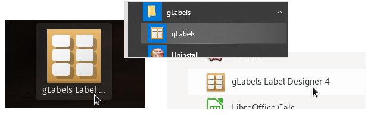
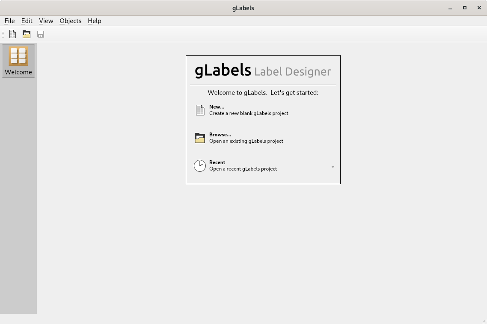

Starting gLabels
You can start gLabels Label Designer from the command line or from a window manager.
To start the gLabels from the command line, simply type: glabels-qt. To see a full list of command line options, simply type: glabels-qt --help.
As gLabels runs on many different platforms with many different window managers, the exact process to start gLabels will differ. Generally, you will be looking for a menu item or icon to click on, as illustrated below:

Starting gLabels from various window managers
Once started, gLabels will present the following startup (or "Welcome") screen. From this screen, you can create a new project or open an existing one.

gLabels startup screen